Bleach
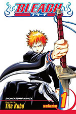
Es un manga que también fue adaptado a anime, que fue escrito por Tite Kubo. El manga nos cuenta las aventuras de un adolescente de 15 años(Ichigo) que accidentalmente absorbe los poderes de un shinigami(Rukia Kuchiki) que son almas que viajan a la tierra para derrotar a los hollow(espíritus corrompidos que devoran almas),
al momento que obtiene estos poderes es obligado a orientar las almas buenas después de la muertes y defenderlas de los hollows.
El manga de Bleach fue publicado en agosto de 2001 por la editorial Shueisha en la revista semanal Japonesa Shonen Jump, hasta agosto de 2016, llegó a publicar 64 volúmenes en formato tankoubon(es el término japonés para referirse a un «volumen compilatorio» de una serie en particular).
Slam Dunk
Es un manga Shonen(Dirigido a chicos adolescentes) del género Spokon(Espíritu deportivo), fue escrito e ilustrado por el mangaka Takehiko Inoue, es considerado como uno de los mejores mangas de deportes, esta obra está compuesta por 31 volúmenes que fueron publicados entre 1990 y 1996,
que se vendieron aproximadamente 126 millones de ejemplares en todo el mundo.
Esta serie relata la historia de Hanamichi Sakuragi, un estudiante de secundaria de 15 años muy problemático y pandillero, con muchos rechazos amorosos y no sabe nada del baloncesto, un dia decidio empezar a practicar basquetbol para conquistar a Harko Akagi la chica la cual le gusta,
la historia sigue la evolución que tiene hanamichi en el basquetbol.
Oishinbo
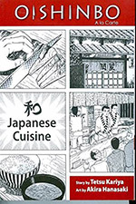
Es una serie manga escrita por Tetsu Kariya e ilustrada por Akira Hanasaki, se empezó a publicar esta obra en 1983 en la revista Big Comic Spirits, esta serie fue publicada por más de 30 años y está compuesta de 11 volúmenes y es un referente en el mundo del manga gastronómico. Esta serie trata sobre un periodico japonés que decide celebrará su centenario que se harían cargo de eso dos de sus periodistas,
prar celebrarlo tendría que hacer un menú definitivo que esté compuesto por las comidas más deliciosas de todo el mundo,
los periodistas fueron son elegidos con una prueba que muestra sus aptitudes para esa tarea, uno es Shiro Yamaoka, cuyas habilidades gourmet las aprendió de su padre, la otra periodista encargada de esta tarea es Yuko Kurita que no tiene tanta formación como Yamaoka pero tiene unas habilidades innatas para distinguir sabores.
KochiKame
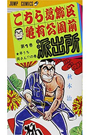
Es un manga creado por Osuma Akimoto, se publicó por primera vez en la revista japonesa de shonen Jump en octubre de 1976 que es unos más largos, que fueron emitidos 156 millones de copias a nivel mundial, también le hicieron una adaptaciones a anime producida por Studio Gallop.
Esta serie trata de las historias que surgen dia a dia en la comisaría del parque de Kameari que tiene como protagonista a Kankichi Ryotsu un hombre de 36 años que tiene un puesto como policía, Ryotsu tiene una muy grande dedicación a su trabajo y también unas habilidades para generar estrategias para trabajar lo menos posible (Que nunca funcionan).
Black jack
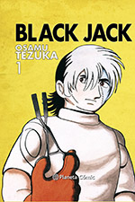
Esta obra fue creada por Osamu Tezuka en la década de 1970, nos relata las aventuras de un médico apodado “Black Jack”. Este manga es una de las obras más oscuras y personales de Tezuka tiene 175 millones de copias en todo el mundo, este mismo está conformado por historias o dificultades que se resuelven en cada capítulo, el misterio de esta obra es el pasado oscuro y misterioso del protagonista, cuyo pequeños datos de su pasado se van desvelando
con cada capítulo. Dado que Osamu Tezuka estudió en su tiempo medicina, tenía unos conocimientos sólidos que se aprecian en la historia y en las ilustraciones de las cirugías, heridas,etc.
Detective Conan
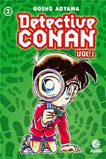
Este manga también conocido como “Case Closed” fue escrito e ilustrado por Ghoso Aoyama, se empezó a publicar en 1994 por la editorial Shogakukan y está compuesta por 100 volúmenes, luego fue adaptada a una serie de anime que cuenta con más de 1000 episodios y 25 películas que fue producida por los estudios TMS Entertainment. La historia de esta obra se centra en la vida de Shinichi Kudo, un famoso detective que
fue envenenado por unos hombres de negro, este veneno no o mato pero le hizo un efecto el cual fue tener el aspecto de un niño de 7 años, despues de esto sinichi decide cambiarse el nombre por Conan Edogawa para ocultar su identidad, para que lastimen a su familia los hombres de negro y para poder obtener evidencia de la organizacion asi detenerlos y encontrar na cura para volver a la normalidad.
Naruto
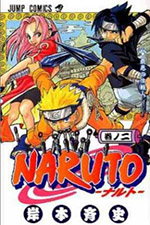
Esta serie de manga fue escrita e ilustrada por Masashi Kishimoto. fue publicado en 1999 por la editorial Shueisha en la revista semanal, tiene un total de 72 volúmenes, este manga fue un éxito tanto así que fue adaptado a anime por el estudio Pierrot y tiene un aproximado de 250 millones de copias en el mundo. La serie nos relata la historia de naruto Uzumaki un ninja huérfano,
cuyos padres murieron por salvar a su aldea(Konoha) del ataque del zorro de 9 colas, que fue sellado en su interior, por lo que los habitantes conocen la verdad rechazan a naruto por miedo, con el tiempo nos muestra el avance del protagonista luchando por su sueño de ser hokage y ser queridos por las personas de su aldea.
Dragon Ball
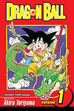
Es una serie escrita e ilustrada por Akira Toriyama que fue publicado en la revista Shonen Jump de la editorial Shueisha entre 1984 y 1995, el manga tuvo 519 capítulos en 42 volúmenes, en japón tiene unas 160 millones de copias y en todo el mundo hay 300 millones vendidos, después de dos años de su lanzamiento la adaptaron al anime por Toei Animation. Esta historia nos cuenta las
aventuras de Goku un guerrero saiyajin(son una extraterrestes fisicamentes iguales a los seres humanos), que fue enviado a la tierra y fue criado por un humano que lo ve como su abuelito llamado “gohan”, al ser criado por gohan y vivir en la tierra tiene como fin protegerla de cualquier amenaza, mientras más avanza la trama conoce a otros personajes que le ayudan con su objetivo y vemos como va evolucionando su poder para proteger a todos los terrícolas y sus amigos.
Golgo13
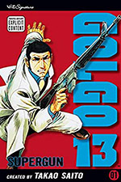
Es un manga japonés ilustrado y escrito por Takao Saito, que fue publicado por la revista Big comic en 1968, este mismo se ha publicado por más de 50 años y tiene más de 300 millones de copias en distintos formatos en todo el mundo asi convirtiendose en unos de los mangas más vendidos y populares de la historia, lo han adaptado a una película, un live action y a 6 videojuegos. Este manga trata sobre un hombre misterioso
(En algunos capítulos se ha dicho que trabaja para la CIA) de origen desconocido quien acepta trabajos de cualquier empleador mientras se le pague un precio de un millón de dólares, es un tirador con promedio de casi un 100% de puntería, solo ha fallado dos disparos en su vida.
One Piece
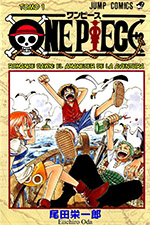
Es una obra escrita e ilustrada por el japones Eiichiro Oda, esta serie se empezo a publicar en la revista japonesa Weekly Shonen Jump el 22 de julio de 1997, hasta la actualidad se han publicado 102 volúmenes que se componen de aproximadamente 1050 capítulos, también fue adaptada al anime por Toei Animation. One piece tiene más de 490 millones de copias en todo el mundo, es uno de los mangas y anime más conocidos de todos los tiempos.
Esta serie nos relata la historia de Monkey D. Luffy quien se inspiró en Shanks(un pirata que le salvó la vida), Luffy tiene el objetivo y sueño de convertirse en el rey de los piratas, años antes de que el protagonista naciera, existía un hombre llamado Gol D. Roger que fue apodado y conocido como el rey de los piratas, que fue ejecutado pero antes de morir le dijo a toda la multitud que el one piece existe(Un tesoro legendario) y es así como innumerables piratas se pusieron en la búsqueda del legendario tesoro causando muchos problemas al gobierno y uno de ellos es Monkey D. Luffy.
 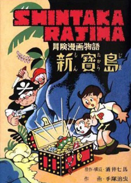
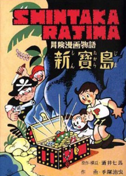